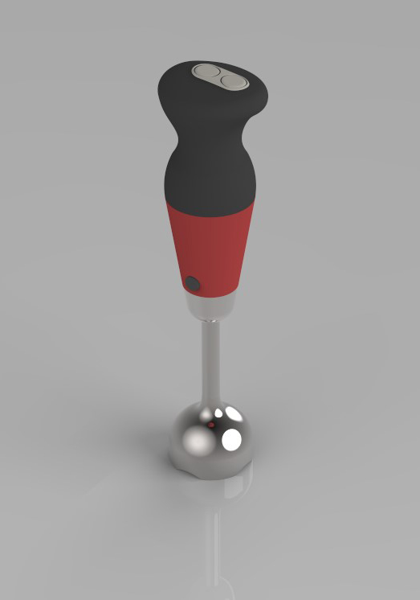
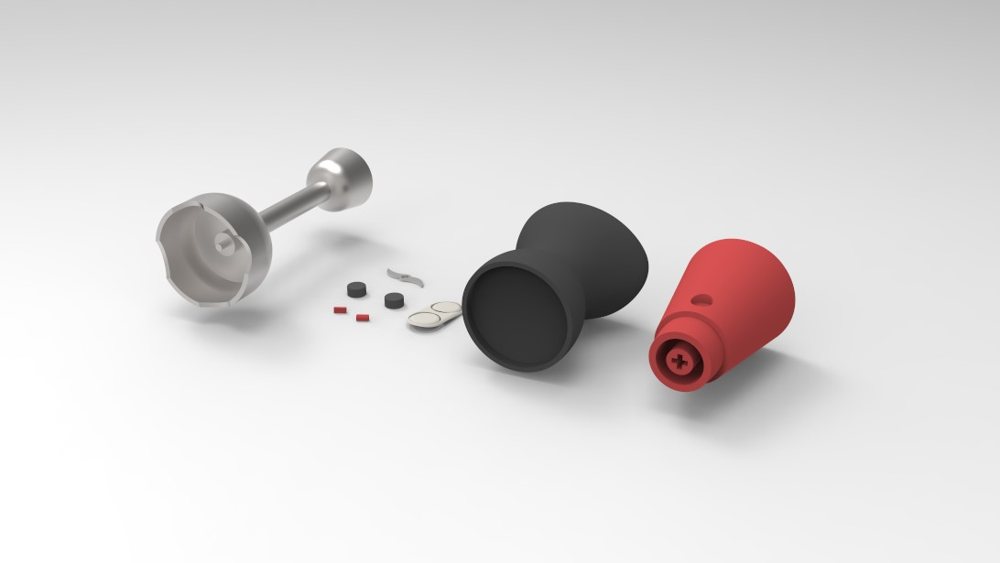
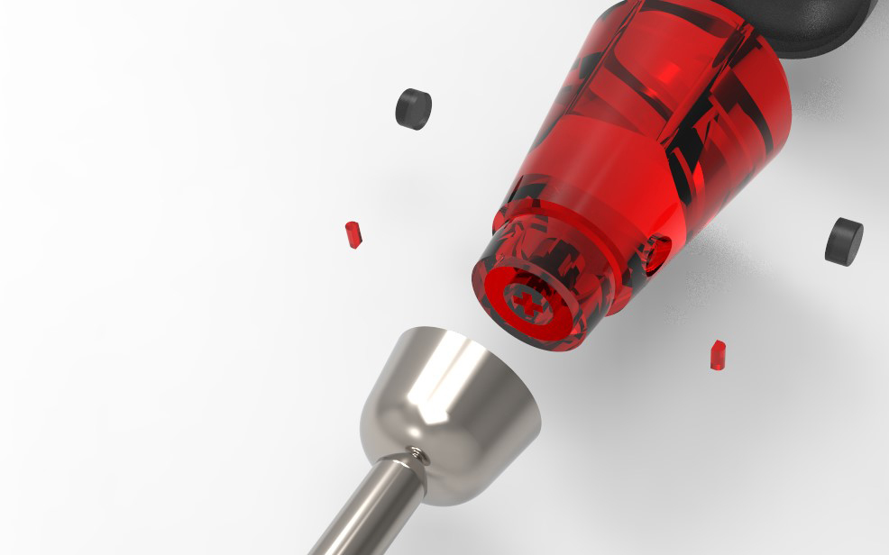
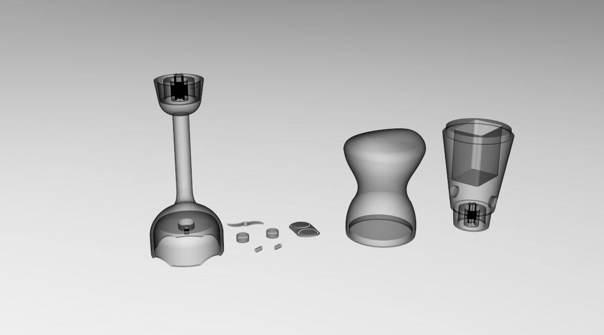
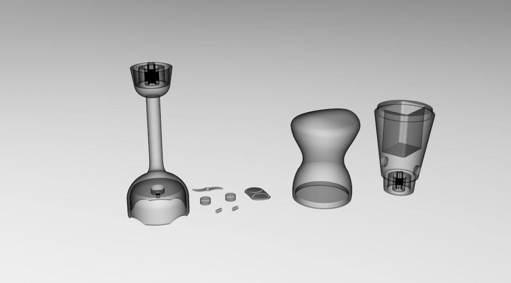
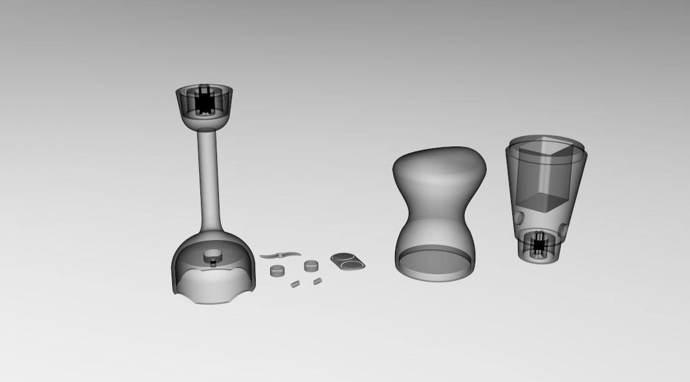

Final Project-Designing with SolidWorks
HAND MIXER
HAND MIXER
I redesigned a hand mixer for my SolidWorks final project. Many of the popular hand mixers in the market are bulky, so I want to design a lighter mixer with ergonomic features which can also save space when stored. While holding the handle, the thumb can easily be placed on the power buttons on top of the handle. The head of the mixer can be replaced to serve different functions. (Ex: egg beater)






 

